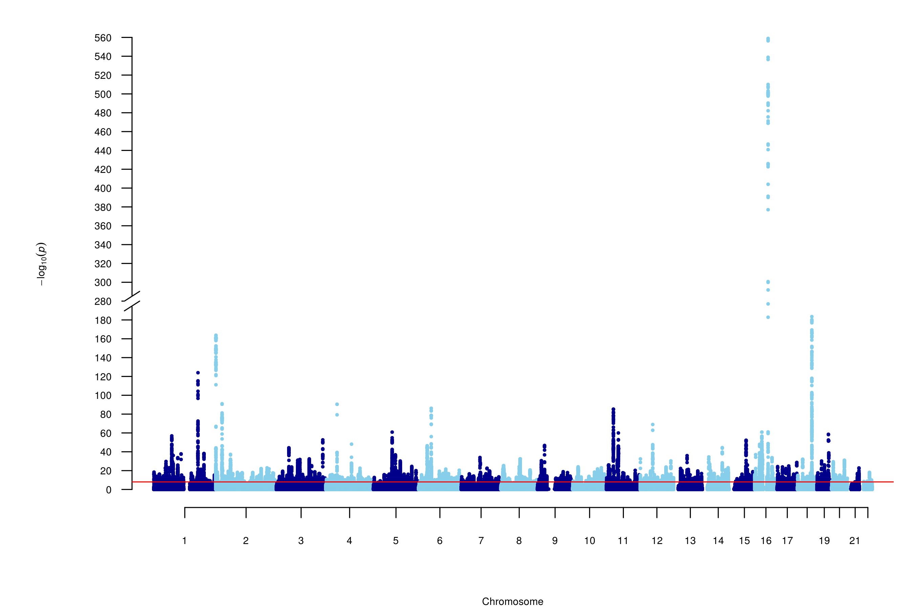

BMI

We work on the GIANT+Biiobank data on BMI (Yengo et al. 2018), including both the genomewide
wget https://portals.broadinstitute.org/collaboration/giant/images/0/0f/Meta-analysis_Locke_et_al+UKBiobank_2018.txt.gz
and GCTA --cojo results as used in Mendelian Randomisation analysis downloaded below on the fly. We would refer to software-notes where information specific software can be seen from their respective directories.
Visualisation
The first thing is to see the Manhattan plot; in this case the P values could be extremely small and we resort to a truncated version.
options(width=120)
gz <- gzfile("Meta-analysis_Locke_et_al+UKBiobank_2018_UPDATED.txt.gz")
BMI <- within(read.delim(gz,as.is=TRUE), {Z <- BETA/SE})
print(subset(BMI[c("CHR","POS","SNP","P")],CHR!=16 & P<=1e-150))
library(Rmpfr)
print(within(subset(BMI, P==0, select=c(CHR,POS,SNP,Z)),
{P <- format(2*pnorm(mpfr(abs(Z),100),lower.tail=FALSE)); Pvalue <- pvalue(Z); log10P <- -log10p(Z)}))
png("BMI.png", res=300, units="in", width=9, height=6)
par(oma=c(0,0,0,0), mar=c(5,6.5,1,1))
mhtplot.trunc(BMI, chr="CHR", bp="POS", z="Z", snp="SNP",
suggestiveline=FALSE, genomewideline=-log10(1e-8),
cex.mtext=1.2, cex.text=1.2,
annotatelog10P=156, annotateTop = FALSE, highlight=c("rs13021737","rs17817449","rs6567160"),
mtext.line=3, y.brk1=200, y.brk2=280, cex.axis=1.2, cex.y=1.2, cex=0.5,
y.ax.space=20,
col = c("blue4", "skyblue")
)
dev.off()
Note especially those P values equal to zero -- pvalue() and R/Rmpfr both give the minimum approximately 1.26e-479. Nevertheless, it is safer
to generate -log10(P) on the fly -- in the plot chromosome.16 stands out which would not be so should we restrict ourselves only
to nonzero P values. We went further to highlight three SNPs.
{kind=link}
Independent signals
(
zcat Meta-analysis_Locke_et_al+UKBiobank_2018_UPDATED.txt.gz | \
head -1
zcat Meta-analysis_Locke_et_al+UKBiobank_2018_UPDATED.txt.gz | \
awk '(NR>1 && $9<=1e-8)' | \
sort -k1,1n -k2,2n
) > BMI.dat
module load gcc/5.2.0
R --no-save -q < BMI.R > BMI.out
where the module command prepares for appropriate version of R to be enabled and BMI.R selects independent signals as follows,
options(echo=FALSE)
BMI <- read.delim("BMI.dat",as.is=TRUE)[c("CHR","POS","SNP","BETA","SE","P")]
require(reshape)
BMI <- rename(BMI,c(CHR="Chrom",POS="End",SNP="MarkerName",BETA="Effect",SE="StdErr",P="P.value"))
require(gap)
chrs <- with(BMI,unique(Chrom))
for(chr in chrs)
{
print(chr)
ps <- subset(BMI[c("Chrom","End","MarkerName","Effect","StdErr")],Chrom==chr)
row.names(ps) <- 1:nrow(ps)
sentinels(ps,chr,1)
}
It is noted that awk has problem dealing with very small values and the code is altered slightly as follows,
(
zcat Meta-analysis_Locke_et_al+UKBiobank_2018_UPDATED.txt.gz | \
head -1
zcat Meta-analysis_Locke_et_al+UKBiobank_2018_UPDATED.txt.gz | \
awk '
function abs(x)
{
if (x<0) return -x;
else return x;
}
(NR>1 && abs($7/$8) >= 5.730729)' | \
sort -k1,1n -k2,2n
) > BMI.dat
R --no-save -q < BMI.R > BMI.out
Then BMI.out has 632 entries instead of 626, i.e., six were recovered. Note also the magic value 5.730729 is obtained from qnorm(1-0.5e-8) from R.
Annotation
As a follow-up to the earlier GIANT analysis, we have in the directory results from PhenoScanner for the 97 SNPs described in the SUMSTATS repository
module load phenoscanner/phenoscanner_v2
phenoscanner -c All -l No -p 0.00001 -i 97.snps -o 97
For the GIANT+UKB data above, the setup is
awk 'NR>1' BMI.dat | \
cut -f3 > BMI.rsid
phenoscanner -c All -l No -p 0.00001 -i BMI.rsid -o BMI
in both cases, results could be expanded by allowing for LD.
Pathway analysis
gunzip -c Meta-analysis_Locke_et_al+UKBiobank_2018.txt.gz | awk '
{
FS=OFS="\t"
if(NR==1) print "SNP","Chr","Pos","P"
else if($9<=5e-8) print $3,$1,$2,$9
}' | gzip -f > BMI.txt.gz
where we opt to customise the header/column rather than the DEPICT configuration file. Moreover, the (hg19) chromosomal positions are eventually back in the data which would facilitate GCTA --cojo analysis and mirrors https://github.com/jinghuazhao/SUMSTATS.
As usual, we make a call to BMI.cfg via
depict.py BMI.cfg
where the DEPICT_v1_rel194.tar.gz version is used. Once started, there was complaint that
Retrieving background loci
Exiting.. To few background files in data/backgrounds/nloci723_nperm500_kb500_rsq0.1_mhc25000000-35000000_colld0.5-collection-1000genomespilot-depict-150429/. Please remove the folder, rerun DEPICT and contact tunepers@broadinstitute.org if the error prevails.
Follow instruction and remove the directory. It is very slow-going, ~20 hours on our Linux node but surprisingly half that time under my Windows 10 whose directory zipped and then unzipped under Linux and rundepict.pythere.
We then generate BMI.xlsx as in PW-pipelne. While there are 859 genesets with FDR<0.05, tissue enrichment shows compelingly an overwhelming role of the nervous system.
This is detailed from PW-pipeline/wiki for the analysis.
Partitioned heritabilty
Information for the documentation example is available from software-notes. Here we carry on with the .gz file above.
gunzip -c Meta-analysis_Locke_et_al+UKBiobank_2018.txt.gz > ldsc.txt
python munge_sumstats.py --sumstats ldsc.txt --a1 Tested_Allele --a2 Other_allele --merge-alleles w_hm3.snplist --out ldsc --a1-inc
where we fix the header with appropriate command-line parameters. We see ldsc.sumstats.gz and ldsc.log and carry on with
python ldsc.py --h2 ldsc.sumstats.gz\
--ref-ld-chr baseline_v1.1/baseline.\
--w-ld-chr 1000G_Phase3_weights_hm3_no_MHC/weights.hm3_noMHC.\
--overlap-annot\
--frqfile-chr 1000G_Phase3_frq/1000G.EUR.QC.\
--out ldsc_baseline
to generate ldsc_baseline.results and ldsc_baseline.log and
python ldsc.py --h2 ldsc.sumstats.gz\
--w-ld-chr 1000G_Phase3_weights_hm3_no_MHC/weights.hm3_noMHC.\
--ref-ld-chr 1000G_Phase3_cell_type_groups/cell_type_group.3.,baseline_v1.1/baseline.\
--overlap-annot\
--frqfile-chr 1000G_Phase3_frq/1000G.EUR.QC.\
--out ldsc_CNS\
--print-coefficients
for ldsc_baseline.results and ldsc_baseline.log.
Mendelian Randomisation
A documented example on BMI-lung cancer is adapted in software-notes but our focus here is on BMI-T2D from DIAGRAM,
wget -qO- https://portals.broadinstitute.org/collaboration/giant/images/e/e2/Meta-analysis_Locke_et_al+UKBiobank_2018_top_941_from_COJO_analysis_UPDATED.txt.gz > BMI-COJO.gz
R --no-save -q < MR.R > MR.log
and call MR.R to generate MR.log and MR.pdf.
TWAS
We start with MetaXcan as follows,
cd /home/jhz22/D/genetics/hakyimlab/MetaXcan/software
./MetaXcan.py \
--model_db_path /home/jhz22/D/genetics/hakyimlab/PredictDB/GTEx-V7_HapMap-2017-11-29/gtex_v7_Brain_Amygdala_imputed_europeans_tw_0.5_signif.db \
--covariance /home/jhz22/D/genetics/hakyimlab/PredictDB/GTEx-V7_HapMap-2017-11-29/gtex_v7_Brain_Amygdala_imputed_eur_covariances.txt.gz \
--gwas_file ldsc.txt \
--snp_column SNP \
--effect_allele_column Tested_Allele \
--non_effect_allele_column Other_Allele \
--beta_column BETA \
--pvalue_column P \
--output_file MX.csv
where instead of chromosome-specific summary statistics as shown in software-notes we use ldsc.txt created above directly with results contained in MX.csv and screen output MX.log.
We would also be tempting to contrast results with FUSION,
gunzip -c Meta-analysis_Locke_et_al+UKBiobank_2018.txt.gz | awk '
{
FS=OFS="\t"
if(NR==1) print "SNP","A1","A2","Z"
else print $3,$4,$5,$7/$8
}' > fusion.txt
for chr in $(seq 22)
do
Rscript FUSION.assoc_test.R --sumstats fusion.txt \
--weight1s WEIGHTS/NTR.BLOOD.RNAARR.pos --weights_dir WEIGHTS/ \
--ref_ld_chr LDREF/1000G.EUR. --chr $chr --out fusion.$chr.dat
done
Note again the header/column is customised differently from its DEPICT counterpart and results are obtained by chromosome.
Two additional aspects are useful to explore:
Fine-mapping
In line with the fact that both TWAS and GWAS z scores are available, the option --caviar natually put them as input files for CARIAR,
for chr in $(seq 22)
do
Rscript FUSION.assoc_test.R \
--sumstats fusion.txt \
--weights /home/jhz22/D/mrc/genetics/FUSION/GE/CMC.BRAIN.RNASEQ.pos \
--weights_dir /home/jhz22/D/mrc/genetics/FUSION/GE/ \
--ref_ld_chr /home/jhz22/D/genetics/fusion_twas/LDREF/1000G.EUR. \
--chr $chr \
--caviar \
--out caviar
done
which are CAVIAR.EQTL.Z, CAVIAR.GWAS.Z, CAVIAR.LD triplets with prefix caviar.genename.
Colocalisation
This is furnished with --coloc_P --GWASN,
for chr in $(seq 22)
do
Rscript FUSION.assoc_test.R \
--sumstats fusion.txt \
--weights /home/jhz22/D/mrc/genetics/FUSION/GE/CMC.BRAIN.RNASEQ.pos \
--weights_dir /home/jhz22/D/mrc/genetics/FUSION/GE/ \
--ref_ld_chr /home/jhz22/D/genetics/fusion_twas/LDREF/1000G.EUR. \
--chr $chr \
--coloc_P 5e-8 \
--GWASN 70000 \
--out coloc$chr.dat
done
Prediction
See software-notes on the use of utils/make_score.R, which is based on the best model.
Approximately independent LD blocks
We can use these blocks genomewide or a specific gene, e.g., MC4R,
awk 'NR>1' ldsc.txt | sort -k1,1n -k2,2n | awk '
{
OFS="\t"
if (NR==1) print "#chrom", "Start", "End", "SNP", "A1", "A2", "FreqA1", "BETA", "SE", "P", "N"
print "chr" $1, $2-1, $2, $3, $4, $5, $6, $7, $8, $9, $10
}' > BMI.bed
# EUR.bed is now with FM-pipeline
intersectBed -a BMI.bed -b EUR.bed -loj | cut -f12-14 --complement > BMI.txt
cut -f4,10 BMI.txt > BMI.snpandp
# gene-based association
vegas2v2 -G -snpandp BMI.snpandp -custom $PWD/g1000p3_EUR -glist glist-hg19 -out genes
# pathway-based association
awk '(NR>1){OFS="\t";gsub(/"/,"",$0);print $2,$8}' genes.out > BMI.geneandp
vegas2v2 -P -geneandp BMI.geneandp -glist glist-hg19 -geneandpath biosystems20160324.vegas2pathSYM -out pathways
# grep MC4R glist-hg19 --> 18 58038563 58040001 MC4R
# 1439 bp
# EUR.bed -- > 1563 chr18 57630483 59020751 region1563
# 1390268 bp
awk /region1563/ BMI.txt > MC4R.txt
# wc -l MC4R.txt
# 1342 SNPs
cut -f4,10 MC4R.txt > MC4R.snpandp
echo MC4R > MC4R.genelist
vegas2v2 -G -snpandp MC4R.snpandp -custom $PWD/g1000p3_EUR -glist glist-hg19 -genelist MC4R.genelist -out MC4R
The reason to use ldsc.txt is to allow for the possibility of finemapping.
Colocalisation analysis
This can be explored with https://github.com/joepickrell/gwas-pw. Assuming that bmi_height.gz has per-SNP z values and variances, the analysis proceeds with ```bash gwas-pw -i bmi_height.gz -bed EUR.bed -phenos BMI HEIGHT ```` giving results on four models (1. BMI only, 2. HEIGHT only, 3. both, 4. separate) significance.
References
Yengo L, et al (2018). Meta-analysis of genome-wide association studies for height and body mass index in ~700,000 individuals of European ancestry. Hum Mol Genet 27(20):3641–3649, BioRxiv, https://www.biorxiv.org/content/10.1101/274654v2.